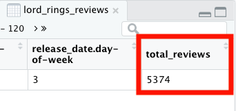

Vectorized Functions in R.
In my last post, I went over for-loops. For-loops are a common programming task and it’s important in understanding how programming works. However, in R for-loops are not written as often as it is for other programming languages.
Many of R’s built-in functions contain for-loops. One could say that many R functions serve as an alternative to for-loops. Many R functions are vectorized meaning that you can use them to operate on all the elements of a vector quickly. Some of these functions, like sum() and mean() for example, I’ve covered in previous posts. Using vectorized functions not only makes code easier to understand, but its run time is faster than for-loops. As DataQuest explains, this is because applying the function to the entire vector allows R to interpret the input and pass it to the compiled code once.
This post will go over DataQuest’s Working With Vectorized Functions lesson. I decided to make this post movie-themed in honor of the Academy Awards that took place last night. The data set I will use in this post comes from Kaggle and was composed by a Kaggle member with the user name of kikun1234. It explores award nominations of movies released between 2000-2018. I loaded the data set into a data frame called oscars_2018. So without further delay, let’s get started!
I already loaded the tidyverse package and imported our data.
Now I am printing our dataset as a tibble.
print(as_tibble(oscars_2018[1:10]))
# A tibble: 1,235 x 10
year movie movie_id certificate duration genre rate metascore
<dbl> <chr> <chr> <chr> <dbl> <chr> <dbl> <dbl>
1 2001 Kate… tt00354… PG-13 118 Come… 6.40 44
2 2000 Chic… tt01206… G 84 Anim… 7 88
3 2005 Fant… tt01206… PG-13 106 Acti… 5.70 40
4 2002 Frida tt01206… R 123 Biog… 7.40 61
5 2001 The … tt01207… PG-13 178 Adve… 8.80 92
6 2000 Miss… tt01207… PG-13 123 Acti… 6.10 59
7 2002 Resi… tt01208… R 100 Acti… 6.70 33
8 2000 X-Men tt01209… PG-13 104 Acti… 7.40 64
9 2000 The … tt01209… G 78 Anim… 7.30 70
10 2005 Corp… tt01211… PG 77 Anim… 7.40 83
# … with 1,225 more rows, and 2 more variables: synopsis <chr>,
# votes <dbl>My last post covered one way to write if/else statements. In this lesson, however, I learned that there is a vectorized solution for this. I could use the if/else() function, which is part of the dplyr package, for applying if/else statements. The if/else function could replace the for-loops I wrote in the previous post. This function requires the following:
Let’s look at an example. I want to see if the movies in my data frame recieved more Golden Globe nominations than Oscar nominations. If a movie recieved more Golden Globe nominations, then the statement “more popular at the Golden Globes” would print. If a movie recieved more Oscar nominations, then the statement, “more popular at the Oscars” would print.
awards_popular <- if_else(oscars_2018$Golden_Globes_nominated > oscars_2018$Oscar_nominated, "more popular at the Golden Globes", "more Popular at the Oscars")
print(as_tibble(awards_popular))
# A tibble: 1,235 x 1
value
<chr>
1 more popular at the Golden Globes
2 more popular at the Golden Globes
3 more Popular at the Oscars
4 more Popular at the Oscars
5 more Popular at the Oscars
6 more Popular at the Oscars
7 more Popular at the Oscars
8 more Popular at the Oscars
9 more Popular at the Oscars
10 more Popular at the Oscars
# … with 1,225 more rowsSimilar to nested if/else statements, I can take a vectorized approach by nesting if_else() functions. When nesting these functions, I would specify a different if_else function to perform an action if the first condition is not met. In the below screenshot, I have three different if_else() functions representing three different conditions:
For each if_else() function in this chain, if the condition is not met, the R interpreter moves on to the next if_else function.
awards_popular_result <- if_else(oscars_2018$Golden_Globes_nominated > oscars_2018$Oscar_nominated, "more popular at the Golden Globes",
if_else(oscars_2018$Golden_Globes_nominated < oscars_2018$Oscar_nominated, "more popular at the Oscars",
if_else(oscars_2018$Golden_Globes_nominated == oscars_2018$Oscar_nominated, "both the Golden Globes and Oscars love you", "")))
print(as_tibble(awards_popular_result))
# A tibble: 1,235 x 1
value
<chr>
1 more popular at the Golden Globes
2 more popular at the Golden Globes
3 both the Golden Globes and Oscars love you
4 more popular at the Oscars
5 more popular at the Oscars
6 both the Golden Globes and Oscars love you
7 both the Golden Globes and Oscars love you
8 both the Golden Globes and Oscars love you
9 both the Golden Globes and Oscars love you
10 more popular at the Oscars
# … with 1,225 more rowsEach if_else function requires that I specify two action to take place based on whether or not the condition is true or false. However because I only have three cases here, I used a pair of empty quotes as the second action in the last if_else() function.
One huge takeaway from this lesson is learning how to solve what are known as “split-apply-combine” problems in R. With a split-apply-combine problem, the data is split into groups, a function is performed on each group, and the results are summarized. According to DataQuest, this is useful for solving many data analysis problems that require the calculation of summary statistics. Let’s start by discussing how to group data.
Two functions that are useful for working on split-apply-combine problems are the group_by() function and the summarize() function. Both functions are part of the dplyr package. The group_by() function allows me to group data by variable. The summarize() function lets me apply a function like sum() or n() to each group. The n() function counts the number of data frame rows in each group.
Let’s look at this example. I want to group my oscars_2018 data frame based on the genre variable. This is what the code looks like. As you recall from a previous post, the pipe operator(%>%) is used to chain functions together. This code splits rows of my oscars_2018 data frame into groups based on genre. I then saved this to the genre_wins data frame.
genre_wins <- oscars_2018 %>% group_by(genre)
genre_wins[1:10]
# A tibble: 1,235 x 10
# Groups: genre [228]
year movie movie_id certificate duration genre rate metascore
<dbl> <chr> <chr> <chr> <dbl> <chr> <dbl> <dbl>
1 2001 Kate… tt00354… PG-13 118 Come… 6.40 44
2 2000 Chic… tt01206… G 84 Anim… 7 88
3 2005 Fant… tt01206… PG-13 106 Acti… 5.70 40
4 2002 Frida tt01206… R 123 Biog… 7.40 61
5 2001 The … tt01207… PG-13 178 Adve… 8.80 92
6 2000 Miss… tt01207… PG-13 123 Acti… 6.10 59
7 2002 Resi… tt01208… R 100 Acti… 6.70 33
8 2000 X-Men tt01209… PG-13 104 Acti… 7.40 64
9 2000 The … tt01209… G 78 Anim… 7.30 70
10 2005 Corp… tt01211… PG 77 Anim… 7.40 83
# … with 1,225 more rows, and 2 more variables: synopsis <chr>,
# votes <dbl>When I print the first few rows of my new genre_wins data frame, I can see the grouping variable and the number of groups specified. The grouping variable is genre and there are 228 genre groups.
Once the data frame is grouped, I can perform operations on each group using the summarize() function.
Take a look at the example below. Let’s say I wanted to calculate how many awards were won in each genre. Once again, I grouped my data frame by genre and then used the summarize() function to add up the awards won in each genre. This was saved into a data frame I call genre_wins_one. When I print this data frame, I end up with the following:
genre_wins_one <- oscars_2018 %>% group_by(genre) %>% summarize(sum(awards_wins))
genre_wins_one
# A tibble: 228 x 2
genre `sum(awards_wins)`
<chr> <dbl>
1 Action|Adventure 5
2 Action|Adventure|Biography 0
3 Action|Adventure|Comedy 6
4 Action|Adventure|Crime 2
5 Action|Adventure|Drama 48
6 Action|Adventure|Family 3
7 Action|Adventure|Fantasy 73
8 Action|Adventure|History 5
9 Action|Adventure|Horror 0
10 Action|Adventure|Mystery 3
# … with 218 more rowsI can see that the Action|Adventure|Fantasy genre has won 73 awards.
I can also group my data frame by multiple variables like the screenshot below. I can see that my data frame is grouped by the genre and certificate variables. I then use the summarize() function to apply the n() function. As I mentioned earlier in the post, the n() function counts counts the number of data frame rows in each group.
oscars_2018 %>% group_by(genre,certificate) %>% summarize(total = n())
# A tibble: 360 x 3
# Groups: genre [228]
genre certificate total
<chr> <chr> <int>
1 Action|Adventure PG-13 8
2 Action|Adventure|Biography PG-13 1
3 Action|Adventure|Biography R 1
4 Action|Adventure|Comedy PG 3
5 Action|Adventure|Comedy PG-13 7
6 Action|Adventure|Comedy R 2
7 Action|Adventure|Crime PG-13 5
8 Action|Adventure|Drama PG-13 14
9 Action|Adventure|Drama R 4
10 Action|Adventure|Family PG 3
# … with 350 more rowsJust as I grouped my data frame by multiple variables, I can specify multiple operations using the summarize() function.
Let’s say I want to know the minimum, maximum and average Metacritic (stored in the metascore variable) score for each genre. I would first group my data frame by genre. I then use the summarize() function to apply the following functions: min(), max() and mean() to the metascore variable.
oscars_2018 %>%
group_by(genre) %>%
summarize(min = min(metascore),
max = max(metascore),
avg = mean(metascore))
# A tibble: 228 x 4
genre min max avg
<chr> <dbl> <dbl> <dbl>
1 Action|Adventure 35 83 61.4
2 Action|Adventure|Biography 39 47 43
3 Action|Adventure|Comedy 29 67 50.8
4 Action|Adventure|Crime 37 57 46.2
5 Action|Adventure|Drama 46 89 65.2
6 Action|Adventure|Family 20 56 38.8
7 Action|Adventure|Fantasy 30 93 55.5
8 Action|Adventure|History 85 85 85
9 Action|Adventure|Horror 37 63 50
10 Action|Adventure|Mystery 43 76 58.5
# … with 218 more rowsWhen I’m done with a grouped data frame, it’s best to return it to its previous state by ungrouping it like so:
oscars_2018 %>% ungroup()
I mentioned earlier that the pipe operator(%>%) is used to chain functions together. It makes code easier to read and write but how does it work? DataQuest explains it this way:
The pipe originated with a package called maggritR. The tidyverse has adopted
the pipe as a key feature of its packages, so loading tidyverse packages loads
%>% automatically. The pipe operator allows you to write code so that the
output of a function is passed to the next function from left to right. Most R > functions do a lot of computing work for you behind the scenes, and you as a
user interact with a “wrapper”. The pipe is a good example of this.
I think this is best demonstrated with an example. Let’s say I wanted to add up the total number of reviews for the movie, The Lord of the Rings: The Fellowship of the Ring. I would first filter the data to retain information about the movie. Then, I would add a new column called total_reviews, containing the total number of reviews (adding user_reviews + critics_reviews variables). I store this in a data frame called lord_rings_reviews.
lord_rings_reviews <- oscars_2018 %>%
filter(movie == "The Lord of the Rings: The Fellowship of the Ring") %>%
mutate(total_reviews = user_reviews + critic_reviews)
When I type View(lord_rings_reviews), a file opens up containing all the data on this Lord of the Rings movie. The column total_reviews has been added in as the last column in the data frame.

Whew, that just about covers it for vectorized functions. Until next time…
For attribution, please cite this work as
Brantley (2020, Feb. 10). Data Sci Dani: Vectorized Functions. Retrieved from https://datascidani.com/posts/2020-02-10-vectorized-functions/
BibTeX citation
@misc{brantley2020vectorized,
author = {Brantley, Danielle},
title = {Data Sci Dani: Vectorized Functions},
url = {https://datascidani.com/posts/2020-02-10-vectorized-functions/},
year = {2020}
}